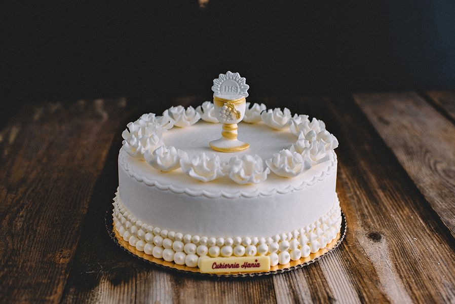

Torty na Komunię – Słodka oprawa wyjątkowego dnia
Pierwsza Komunia Święta to jedno z najważniejszych wydarzeń w życiu dziecka i całej rodziny. To dzień pełen wzruszeń, duchowej refleksji, radości oraz spotkań z najbliższymi. W tak wyjątkowej chwili każdy detal ma znaczenie – także ten słodki akcent, który wieńczy uroczysty obiad: tort komunijny.
W naszej piekarni z pasją i dbałością o każdy szczegół przygotowujemy torty komunijne na indywidualne zamówienie, by spełnić oczekiwania nawet najbardziej wymagających klientów. Łączymy tradycję z nowoczesnością, dzięki czemu nasze wypieki zachwycają nie tylko smakiem, ale i wyglądem.
Torty personalizowane – jedyne w swoim rodzaju
Każde dziecko jest inne – dlatego i tort powinien być wyjątkowy. W naszej ofercie znajdziesz możliwość pełnej personalizacji:
- wybór kształtu (okrągły, prostokątny, piętrowy),
- ulubione smaki (m.in. śmietankowy, czekoladowy, owocowy, tiramisu, oreo, mango-marakuja),
- dekoracje dopasowane do okazji – hostia, kielich, aniołki, krzyż, wstążki, a nawet zdjęcia dziecka na opłatku cukrowym, napisy z imieniem dziecka, datą komunii, dedykacją.
Staramy się, aby każdy tort komunijny był nie tylko elegancki, ale także pełen symboliki związanej z tą wyjątkową uroczystością.
Naturalne składniki i sprawdzone receptury
Nasze torty powstają wyłącznie z wysokiej jakości, naturalnych składników – bez sztucznych dodatków i konserwantów. Świeże jaja, prawdziwe masło, dobrej jakości mąka, owoce i domowe konfitury – to fundament naszego smaku. Dzięki temu torty są nie tylko piękne, ale również lekkie i smaczne, odpowiednie także dla najmłodszych.
Jak zamówić tort komunijny?
Przyjmujemy zamówienia zarówno telefonicznie, jak i osobiście w naszej piekarni. Zachęcamy do kontaktu z odpowiednim wyprzedzeniem – w okresie komunijnym liczba zamówień jest bardzo duża, a zależy nam na tym, by każdemu klientowi poświęcić należytą uwagę.
- datę i godzinę odbioru,
- rozmiar tortu (ilość porcji),
- smak i rodzaj biszkoptu,
- wzór dekoracji (można przesłać inspirację),
- dodatkowe uwagi – np. opcja bezglutenowa lub bez laktozy.